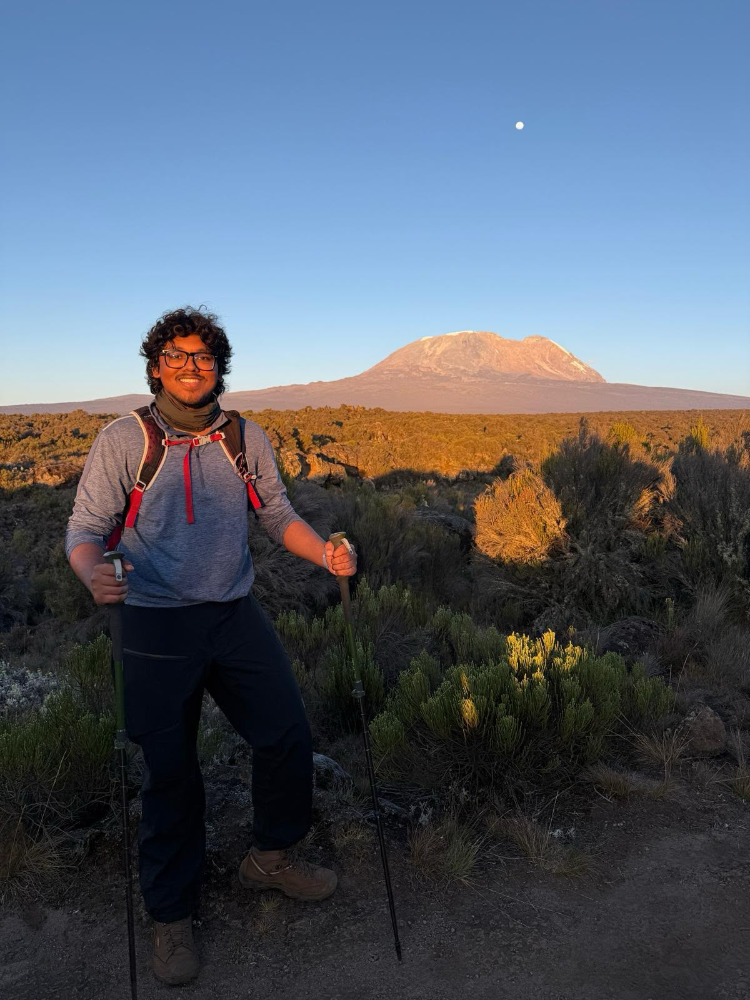
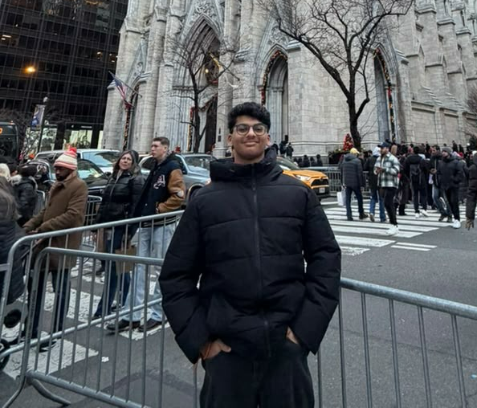

About the Committee
The ECOSOC serves as the central platform for addressing the world's economic, social, and environmental challenges. Delegates will represent their nations, negotiate practical solutions, and draft resolutions that advance sustainable development, reduce inequality, and strengthen international cooperation through diplomacy and informed debate.
Agenda
Facilitating Sustainable Economic Recovery and Reconstruction in Post-Conflict States.
Background Guide
Executive Board

Co-President: Siddarth Gumma
Siddharth Gumma is currently pursuing a degree in Msc. Economics at BITS Pilani, Hyderabad, where he actively pursues his economic and engineering background. Bringing with him years of experience in Hyderabad's Model United Nations circuit, Siddharth has served in a wide range of committees and leadership roles. Returning as a member of the Executive Board after last year's conference, he combines extensive MUN experience with a confident and engaging presence. During his time at Delhi Public School, he played a pivotal role in the Secretariat for two consecutive years, contributing significantly to the planning and execution of the conference. Known for his charisma, eloquence, and articulate speaking style, Siddharth is equally at ease leading committee discussions as he is engaging delegates in meaningful debate. Beyond MUN, he enjoys seeking new adventures, from trekking to Everest Base Camp to his recent expedition to summit Mt. Kilimanjaro. As he returns to DPS in a familiar role, Siddharth looks forward to making this committee both intellectually stimulating and an unforgettable experience for every delegate

Co-President: Kushal Reddy Aramati
Kushaal Aramati is currently pursuing a double major in Computer Science and Data Science at the University of Wisconsin–Madison. Known for his composed demeanour, approachability, and ability to appreciate diverse perspectives, he strives to foster an environment where rigorous debate is matched by mutual respect. Beyond academics, he is involved in genetics research and has a keen interest in sports and sports analytics. He also has experience in logistics and finance and currently serves as the Treasurer of one of UW–Madison's sports clubs, where he oversees all financial operations. Outside of his studies, he enjoys following Formula 1, playing and watching sports, and keeping up with current affairs. As an alumnus of Delhi Public School, Kushaal is delighted to return to his alma mater in a new role and looks forward to making this conference a rewarding and memorable experience for every delegate.